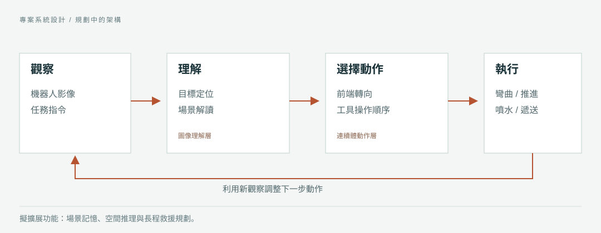

理解場景。
從機器人視角辨識任務目標與相關障礙物。設計亦考慮空間推理，以及先前觀察提供的情境資訊。
Robotics & Embodied Intelligence
The Chinese University of Hong Kong
Continuum Rescue
受限空间救援
PRIVATE RESEARCH MATERIALS
RESEARCH PROJECT / 连续体机器人
Hardware demonstrations · Autonomy and integrated rescue are proposed; demo clips are separate, unsynchronised recordings.
Continuum Rescue
探索連續體機器人智能體用於建築消防救援
缩比实体任务演示 · 未建立真实火场效能或完整自主架构
在建筑模型中展示目标定向、喷水与物资递送；真实火场与端到端自主仍待验证。
结果来自现有稿件/素材；本次网页修订未新增训练、试验或实机验证。详情资料受账户与密码访问控制。讓柔性機器人進入建築救援盲區，完成近距離觀察與局部作業。
轉向目標、沿本體輸送水流，再切換至物資運輸。透過三類微縮建築，觀察完整任務流程。
三等獎 · 第十二屆香港大學生創新及創業大賽，2026高密度建築中存在狹窄開口與視線遮擋。受內視鏡探查原理啟發，本專案將可轉向的連續體本體、機器人視角感測及作業通道結合，讓觀察與局部處置更接近難以觸及的目標。
每個場景均提供機器人與外部視角，圖說提示值得觀察的行為。各段影片獨立播放。
以上為微縮場景的定性演示。目標用於表示消防情境；影片不構成真實滅火、臨床供氧或自主程度的量化證據。配對影片時長不同，採獨立播放。
架構構想透過視覺回饋連接圖像理解與連續體動作，描述觀察如何引導目標定位、前端轉向及工具操作。影片記錄實際任務行為，但無法單獨證明此架構已完成端到端自主實現。

從機器人視角辨識任務目標與相關障礙物。設計亦考慮空間推理，以及先前觀察提供的情境資訊。
將任務連結至彎曲、推進、噴射方向及有序的物資運輸，並利用新觀察調整下一步動作。
RoboBrain 2.0為圖像理解層提供研究基礎。EndoVLA為柔性器械的視覺指令與動作提供研究基礎。以上為相關研究。


前端設計可繞其軸線向各方向彎曲。本體將作業通道延伸至前端，讓觀察與處置共用同一平台。
以上依系統設計說明各通道功能，並非照片中各開口的逐一標識。
專案考慮整合建築消防管道，以及室外消防平台的柔性前端。目前透過微縮場景探索這些任務構想。
三類建築模型中的相機視角與實際任務行為，包括朝向目標的前端運動、噴水及物資運輸。演示目標用於表示消防任務，並非真實火焰撲滅的證據。
受控試驗、自主程度與操作員介入紀錄、耐熱及濃煙環境可靠性，以及實地部署。面罩運輸不等於已驗證氧氣供給或醫療效果；此倉庫尚未發布訓練與控制程式。
本專案獲得創新組三等獎,，所屬類別為數學及物理／機械及控制系統。香港中文大學官方獲獎名單中的專案名稱為 Exploring Continuum 機器人 Agents for Firefighting in Buildings.
港中文研究紀錄列明獲獎時間為 2026 年 5 月；校方活動報導指頒獎典禮於 2026 年 5 月 30 日舉行。